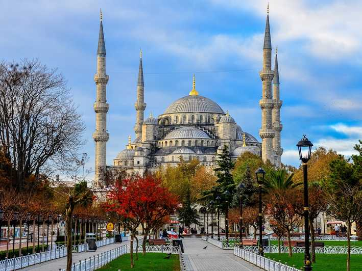
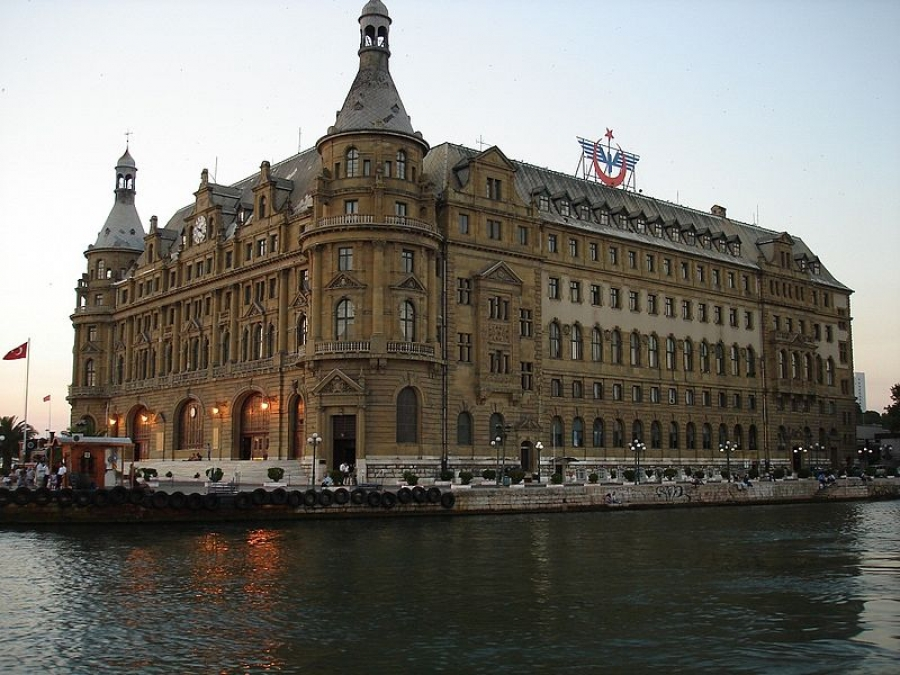

Istanbul je prvenstveno poznat po vizantijskoj i osmanskoj arhitekturi, ali njegove građevine održavaju sve narode i carstva koja su ranije vladala gradom. Primeri đenovljanske i rimske arhitekture ostali su vidljivi zajedno sa osmanskim primjerima. Ništa od primera starogrčke arhitekture nije preživelo, ali rimska arhitektura se pokazala kao dugotrajnija. Obeliks koji je podigao Teodosije I u Carigradskom hipodromu i dalje je vidljiv kod Sultan Ahmedove džamije, dok je dio Valensovog akvadukta, koji je izgrađen krajem 4. vijeka, stoji relativno neoštećen na zapadnoj ivici okruga Fatih.Konstantinov stub, podignut 330. godine da bi obeležio novu rimsku prestonicu, stoji nedaleko od Hipodroma.
Rana vizantijska arhitektura pratila je rimske modele kupola i lukova, ali se poboljšala po ovim elementima, na primer crkve Svetih Srđa i Vaha. Najstarija vizantijska crkva u Istanbulu — iako u ruševinama — jeste Studitski manastir (kasnije pretvoren u Imrahorovu džamiju), izgrađena je 454. godine. Nakon povratka Konstantinopolja 1261. godine, Vizantinci su izgradili dve najvažnije crkve, crkve Hrista Spasitelja i Bogorodice Pamakaristos. Vrhunac vizantijske arhitekture i jedna od najistaknutijig građevina u Istanbulu jeste Aja Sofija. Sa kupolom prečnika od 31 m, Aja Sofija je bila najveća crkva na svietu viekovima, kasnije pretvorena u džamiju, a danas ima status muzeja.
Među najstarijim primerima osmanske arhitekture u Istanbulu su Anadolijski i Rumelijski hisari, koje su Osmanlijama pomogli pri opsadi grada.Tokom naredna četiri vijeka, Osmanlije su ostavile neizbrisiv trag u Istanbulu, izgradnjom visokih džamija i ukrašenih saraja. Najveći saraj, Topkapi, obuhvata razne nizove arhitektonskog stila, od baroka u haremu, do klasicizma u biblioteci Enderun.Carske džamije (Fatihova džamija, džamija Bajazita II, džamija Selim Javuz, Sulejmanova džamija, Sultan Ahmedova džamija i Jeni džamija)izgrađene su na vrhuncu Osmanskog carstva, tokom 16. i 17. vieka. U narednim viekovima, a naročito tokom Tanzimat reformi, osmansku arhitekturu zamijenili su evropski stilovi. Primer je carska Nuruosmanijska džamija. Područje oko Istiklal avenije bilo je mesto za velike evropske ambasade i redovima građevine izgrađenim u stilovima neoklasicizma, neorenesanse i secesije, koje i dalje imaju uticaj na arhitekturu u Bejogluu — uključujući crkve, prodavnice i pozorišta — i zvanične građevine kao što je Dolmabahče saraj.
 